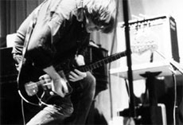

|
SONIC YOUTH: SLEEPING NIGHTS AWAKE
Michael Albright | USA 2006 | 84 min.
Material: DV
Format: Beta SP
Original language: English
Script: Michael Albright
Camera: Ali Alonso, Noah Conrath, Danielle Hauser, Charlie Hayes, Ben Kolton, Allana Noyes, Nathan Lower
Sound: Ali Alonso, Noah Conrath, Danielle Hauser, Charlie Hayes, Ben Kolton, Allana Noyes, Nathan Lower
Editing: Michael Albright
Music: Sonic Youth
With Sonic Youth
Production: Michael Albright
Print/Sales: Project Moonshine
www.projectmoonshine.org
German Premiere
"Sonic Youth has been documented by a host of filmmakers ranging from Jonas Mekas to Braden King in DO YOU BELIEVE IN RAPTURE? (UNDERDOX 03), but the leading band of the No Wave movement has never been quite expressively and thoroughly captured as by the high school crew behind SLEEPING NIGHTS AWAKE. This is one of the most engaging and single-minded film studies of a band since Instrument, Jem Cohen’s 1999 film on Fugazi, and Cohen's influence on the filmmaking is felt in several respects. Best of all, the music is uncompromised, full-bore Sonic Youth, a band distinguished by a rare gift for blending pop attitude with avant-garde taste and daring. Albright, having trained under Albert Maysles, shows that he's learned (and imparted to his talented students) Maysles' central documaking lesson, which is to always be ready to cover the moment with one's camera and to do so without visual or narrative trickery." – Robert Koehler, Variety
Michael Albright studied film at the University of California and media at the UCLA. In New York he joined Albert Maysles and worked as director and editor. In 2006 he established "Project Moonshine" in Reno, Nevada, a non-profit organization that helps young talents and film students to develop and realize their projects.
Films: Being Here 2006 | Que Sera Sera 2006 | Sonic Youth: Sleeping Nights Awake 2006 (UNDERDOX 03) | Shaking Life 2007
back
|